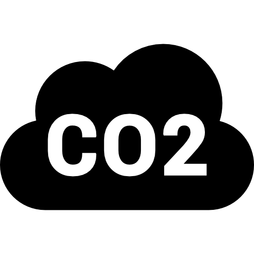

Sobre nós
Calculadora
Há quanto tempo você está sendo vegano?
 Litros de água:
Litros de água:
Kg de grãos:
 Kg de gases:
M² de florestas:
Estatísticas
-
A pecuária é o setor que mais utiliza água potável no mundo.
Link sobre este dado
Um dia sendo vegano você deixa de desperdiçar 3400 litros de água
Link para SVB "Sociedade Vegana Brasileira" onde foi retidado os dados
Água
-
Um dia sendo vegano, você não desperdiça 7 kg de grãos.
Link para SVB "Sociedade Vegana Brasileira" onde foi retidado os dados
Grãos
-
O setor agropecuário brasileiro contribuiu diretamente com cerca de 30% das emissões de gases que causam efeito estufa do Brasil
Link para o livro "Comendo o Planeta"
Um dia sendo vegano, você deixa de emitir 14 kg de gases causadores de efeito estufa na atmosfera
Link para SVB "Sociedade Vegana Brasileira" onde foi retidado os dados
Gases
-
Pecuária é responsável por cerca 80% do desmatamento da Floresta Amazônica.
Link sobre desmatamento na Amazônia
Um dia sendo vegano, você deixa de desmatar 24m² de Florestas
Link para SVB "Sociedade Vegana Brasileira" onde foi retidado os dados